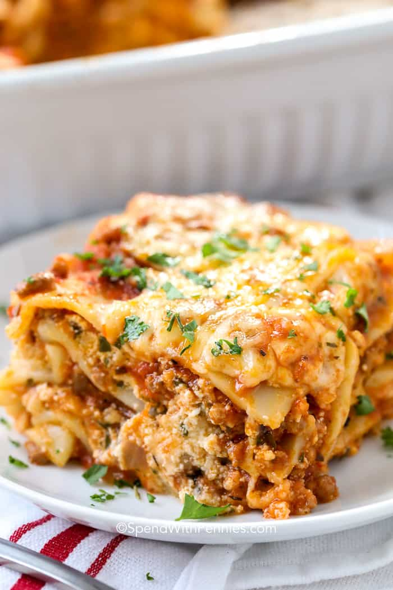

Easy Lasagna Recipe!

Description
This dish, a staple of Italian-American restaurants everywhere, is also a classical Italian dish going all the way back into the middle ages. While those days (and the ingredient lists that went with them) are long gone, we still have this hearty, delicious dish going around our kitchens and dining room tables today!
Here's how you can make your very own lasagna at home!
Ingredients
- 12 lasagna noodles
- 4 cups mozzarella cheese, shredded and divided
- 1/2 cup parmesan cheese, shredded and divided
- 1/2 lb lean ground beef
- 1/2 lb Italian sausage
- 1 onion
- 2 cloves of garlic
- 36 oz. pasta sauce
- 2 tbsp tomato paste
- 1 tsp italian seasoning
- 1/4 cup parsley, chopped
- 2 cups ricotta
- 1 egg, beaten
Preparation
- Heat oven to 350 while cooking pasta per the directions. Rinse cold and set aside.
- Brown beef, sausage, onion, and garlic over medium high heat until there's no pink. Drain the oils and fats.
- Stir in pasta sauce, tomato paste, and seasoning, simmering for 5 minutes.
- Make cheese mixture by combining 1.5 cups mozzarella, .25 cups parmesan, ricotta, parsley, and egg.
Add 1 cup meat sauce to 9x13 pan.
Top with three lasagna noodles. Layer with 1/3 of the cheese mixture and 1 cup of meat sauce.
Repeat this twice more.
Finish the lasagna with the three remaining noodles, plus any remaining sauce.
- Cover with foil; bake 45 minutes.
- Uncover, sprinkle remaining cheese, and bake for an additional 15 minutes or until browned and bubbly. Broil for 2-3 minutes if crispy top is desired.
- Rest 10-15 minutes before cutting.